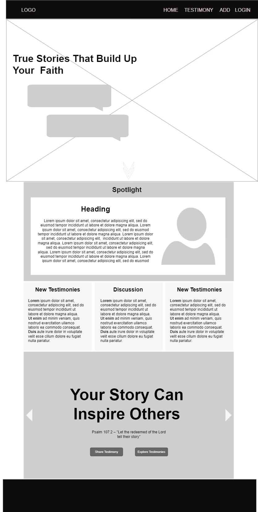
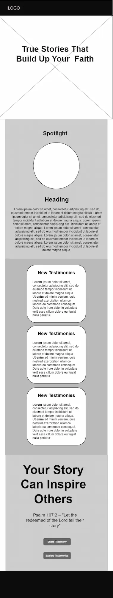

Site Plan
Testimony Portal
WDD 131 - Web Frontend Development I
Adetokunbo Olutola Osibo
Project 1
Site Plan
Site Name: Testimony Portal
Testimony Portal is an online platform where people can share personal stories about how Jesus Christ has changed their lives. It’s meant to inspire, encourage, and spread the message of faith, through written or video testimonies.
Site Purpose:
This site is a digital space to showcase the power of faith through real-life experiences.
Usage Scenarios
- Has anyone overcome addiction through faith in Jesus? I need to know if real change is possible?
- I’m a believer, but I’ve been struggling with my faith lately. Can I find stories that will help reignite my passion for God?”
Color Scheme:
I will use the following colors: as my primary and secondary colors.
- --primary-color: #2A2E45;
- --secondary-color: #ADB3CC;
- --accent1-color: #000000;
- --accent2-color: #C7EF00;
- --headline-color-on-white: #20557a;
- --headline-color-on-color: rgb(67, 245, 76);
- --paragraph-color-on-color: white;
- --paragraph-background-color: #145380;
Typography:
- --heading-font: "Big Shoulders Inline Text", sans-serif;
- --title-font: "Barlow Condensed", sans-serif;
- --paragraph-font: "Monserrat", sans-serif;
Wireframes:

